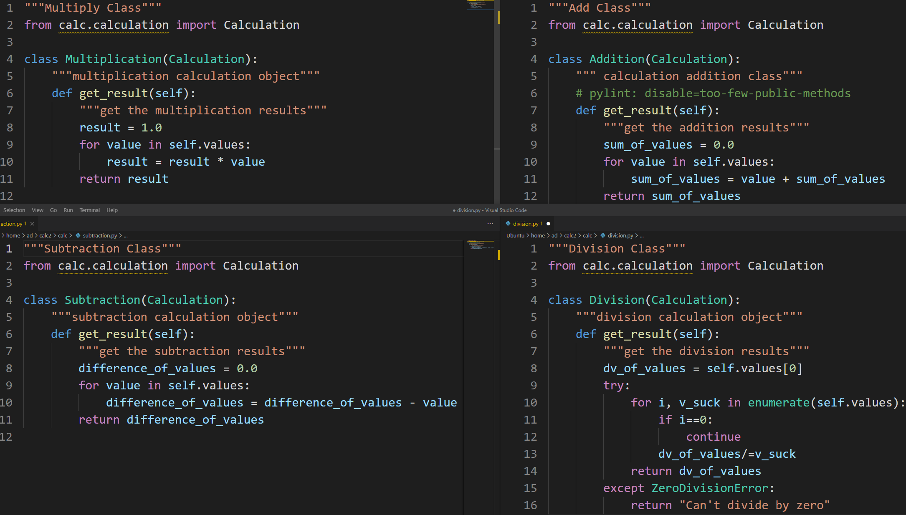

Home

Example of External Testing
Seperation of Concerns
Seperation of Concerns is the idea of avoiding combining different concerns or pieces of code
When code is seperated, there is a less probability of breaking unmodified code
Another way of thinking about this is that all of the functions are simple, one-liners
And different functions are stored in seperate files
This techinique makes it easier to maintain code and add features
In the calculation program, you can see that the four types of operations are located in different python scripts
Even the base calculation, the abstract class, is seperated
Calculator is the API for calculation and every function dealing with the
history
array is located there
There is no duplicated code, meaning there are no repeating loops
Unduplicated code is a good thing and is caused by seperating code and making the code as abstract as possible